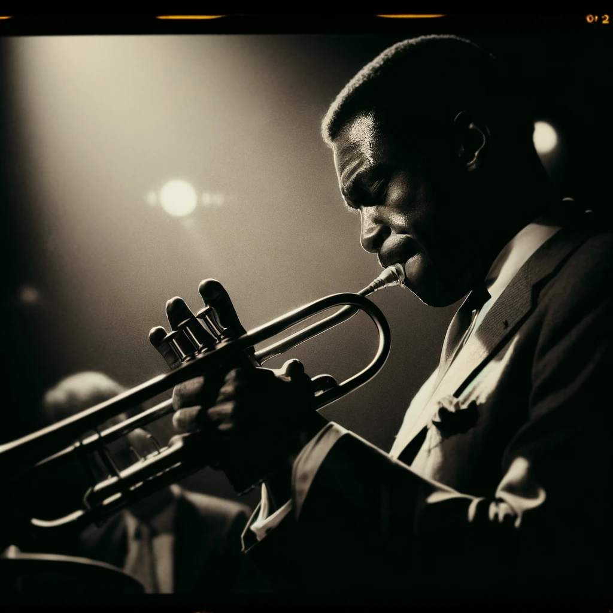
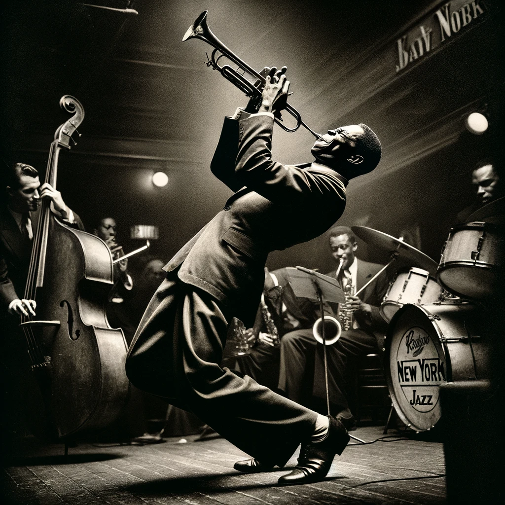

Miles Davis (image reveal demo)
Miles Dewey Davis III (May 26, 1926 - September 28, 1991) was an American jazz trumpeter, bandleader, and composer. He is among the most influential and acclaimed figures in the history of jazz and 20th-century music. Davis adopted a variety of musical directions in a roughly five-decade career that kept him at the forefront of many major stylistic developments in jazz.
Born into an upper-middle-class family in Alton, Illinois, and raised in East St. Louis, Davis started on the trumpet in his early teens. He left to study at Juilliard in New York City, before dropping out and making his professional debut as a member of saxophonist Charlie Parker's bebop quintet from 1944 to 1948. Shortly after, he recorded the Birth of the Cool sessions for Capitol Records, which were instrumental to the development of cool jazz. In the early 1950s, Davis recorded some of the earliest hard bop music while on Prestige Records but did so haphazardly due to a heroin addiction. After a widely acclaimed comeback performance at the Newport Jazz Festival, he signed a long-term contract with Columbia Records, and recorded the album 'Round About Midnight in 1955. It was his first work with saxophonist John Coltrane and bassist Paul Chambers, key members of the sextet he led into the early 1960s. During this period, he alternated between orchestral jazz collaborations with arranger Gil Evans, such as the Spanish music-influenced Sketches of Spain (1960), and band recordings, such as Milestones (1958) and Kind of Blue (1959). The latter recording remains one of the most popular jazz albums of all time, having sold over five million copies in the U.S.
After a five-year retirement due to poor health, Davis resumed his career in the 1980s, employing younger musicians and pop sounds on albums such as The Man with the Horn (1981) and Tutu (1986). Critics were often unreceptive but the decade garnered Davis his highest level of commercial recognition. He performed sold-out concerts worldwide, while branching out into visual arts, film, and television work, before his death in 1991 from the combined effects of a stroke, pneumonia and respiratory failure. In 2006, Davis was inducted into the Rock and Roll Hall of Fame, which recognized him as "one of the key figures in the history of jazz". Rolling Stone described him as "the most revered jazz trumpeter of all time, not to mention one of the most important musicians of the 20th century," while Gerald Early called him inarguably one of the most influential and innovative musicians of that period.

After a five-year retirement due to poor health, Davis resumed his career in the 1980s, employing younger musicians and pop sounds on albums such as The Man with the Horn (1981) and Tutu (1986). Critics were often unreceptive but the decade garnered Davis his highest level of commercial recognition. He performed sold-out concerts worldwide, while branching out into visual arts, film, and television work, before his death in 1991 from the combined effects of a stroke, pneumonia and respiratory failure. In 2006, Davis was inducted into the Rock and Roll Hall of Fame, which recognized him as "one of the key figures in the history of jazz". Rolling Stone described him as "the most revered jazz trumpeter of all time, not to mention one of the most important musicians of the 20th century," while Gerald Early called him inarguably one of the most influential and innovative musicians of that period.